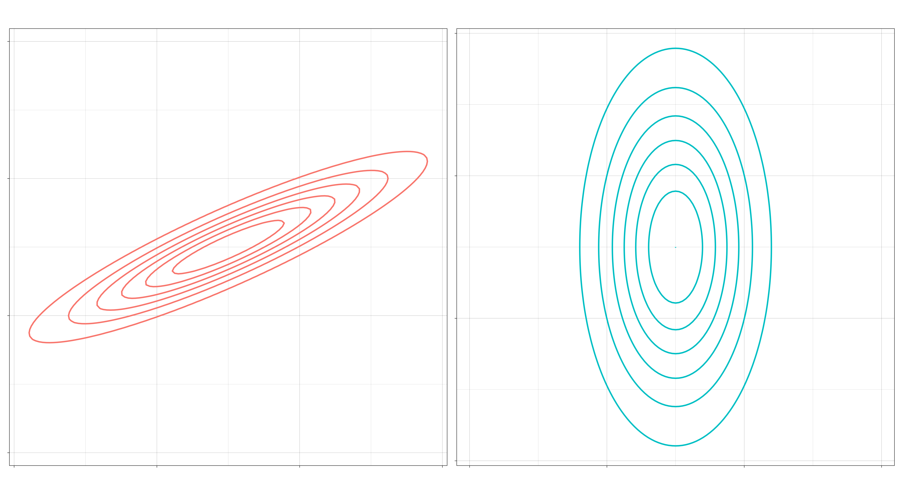
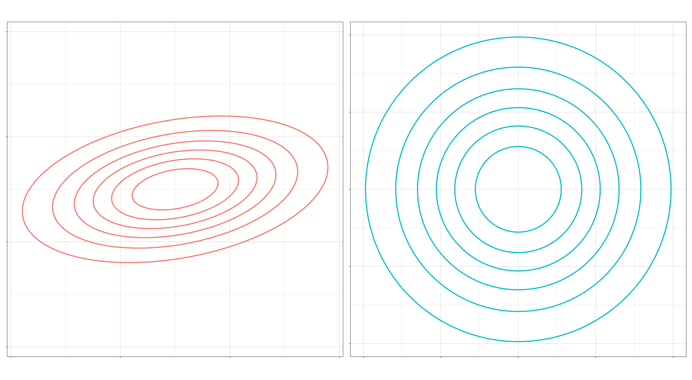
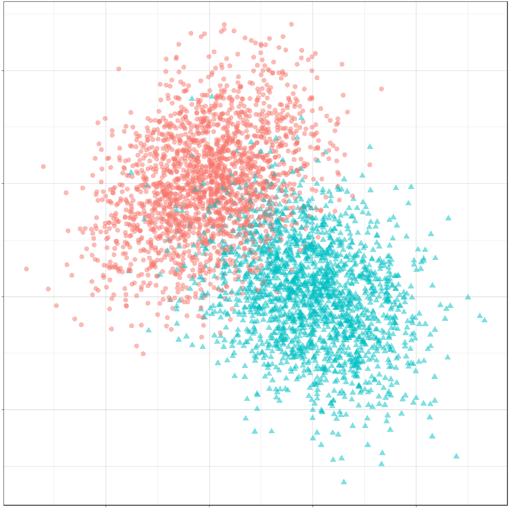
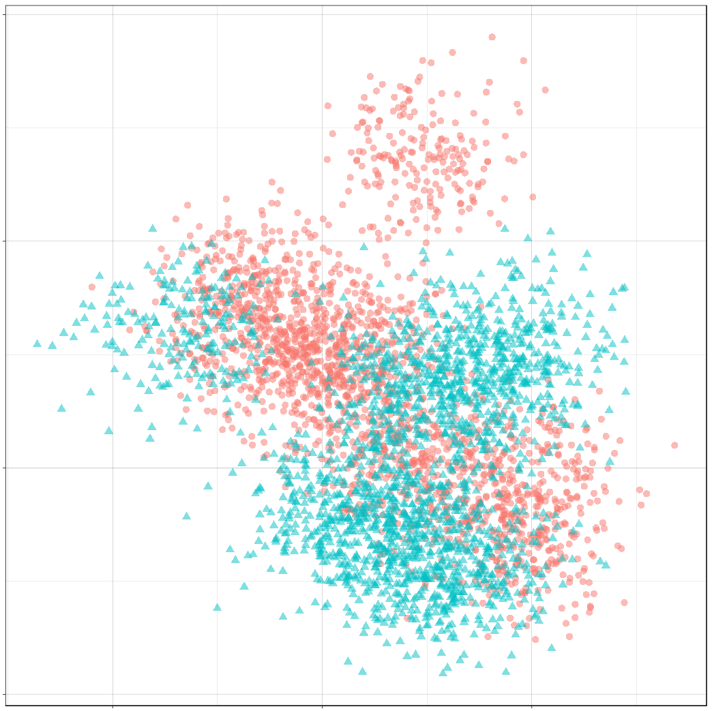

Gaussian Discriminant Analysis (GDA) is the name for a family of classifiers that includes the well-known linear and quadratic classifiers. These classifiers use class-conditional normal distributions as the data model for their observed features:
\[(X \mid C = c) \sim Normal(\mu_c, \Sigma_c) \]
As we saw in the post on optimal decision boundaries, the classification problem is solved by maximizing the posterior probability of class \(C=c\) given the observed data \(X\). From Bayes’ theorem, the addition of class distributions to our model then determines the problem completely:
\[ p(C = c \mid X) = \frac{p(X \mid C = c)p(C=c)}{\Sigma_{c'} p(X \mid C = c')p(C=c')} \]
A typical set of class-conditional distributions for a binary classification problem might look like this:
Left: A sample from the feature distributions for the two-class case. Right: Their densities.
The classification problem then is to draw a boundary that optimally separates the two distributions.
Typically, this boundary is formed by comparing discriminant functions, obtained by plugging in normal densities into the Bayes’ formula above. For a given observation, these discriminant functions assign a score to each class; the class with the highest score is the class chosen for that observation.
In the most general case, the discriminant function looks like this:
where \(\pi_c = p(C = c)\) is the prior probability of class \(c\). The optimal decision boundary is formed where the contours of the class-conditional densities intersect – because this is where the classes’ discriminant functions are equal – and it is the covariance matricies \(\Sigma_k\) that determine the shape of these contours. And so, by making additional assumptions about how the covariance should be modeled, we can try to tune the performance of our classifier to the data of interest.
In this post, we’ll look at a few simple assumptions we can make about \(\Sigma_k\) and how that affects the kinds of decisions the classifier will arrive at. In particular, we’ll see that there are six kinds of models we can produce depending on three different assumptions.
The decision boundaries of two GDA models. Left: Quadratic discriminant analysis. Right: Linear discriminant analysis.
Three Questions/Six Kinds
Let’s phrase these assumptions as questions. The first question regards the relationship between the covariance matricies of all the classes. The second and third are about the relationship of the features within a class.
I. Are all the covariance matrices modeled separately, or is there one that they share? If separate, then the decision boundaries will be quadratic. If shared, then the decision boundaries will be linear. (Separate means \(\Sigma_c \neq \Sigma_d\) when \(c \neq d\). Shared means \(\Sigma_c = \Sigma\) for all \(c\).)
Left: A quadratic decision boundary. Right: A linear decision boundary.
II. May the features within a class be correlated? If correlated, then the elliptical contours of the distribution will be at an angle. If independent, then they can only vary independently along each axis (up and down, left and right). (Independent means \(\Sigma_k\) is a diagonal matrix for all \(k\).)
Left: Distribution with correlated features. Right: Distribution with uncorrelated features.
III. If the features within a class are uncorrelated, might they still differ by their standard deviations? If so, then the contours of the distribution can be elliptical. If not, then the contours will be spherical. (“No” means \(\Sigma_k = \sigma_k I\) for each \(k\), a multiple of the identity matrix.)
Left: An elliptical feature distribution. Right: Spherical feature distribution.
This gives us six different kinds of Gaussian disciminant analysis.
The more “no”s to these questions, the more restrictive the model is, and the more stable its decision boundary will be.
Whether this is good or bad depends on the data to which the model is applied. If there are a large number of observations relative to the number of features (a very long dataset), then the data can support a model with weaker assumptions. More flexible models require larger datasets in order to learn properties of the distributions that were not “built-in” by assumptions. The payoff is that there is less chance that the resulting model will differ a great deal from the true model.
But a model with the regularizing effect of strong assumptions might perform better when the number of observations is small relative to the number of features (a very wide dataset). Especially in high dimenions, the data may be so sparse that the classes are still well-separated by linear boundaries, even if the true boundaries are not linear. In very high-dimensional spaces (\(p > N\), there is not even enough data to obtain the MLE estimate, in which case some kind of regularization is necessary to even begin the problem.
So so that we know what kinds of assumptions we can make about \(\Sigma_k\), let’s take a look at how they affect the properties of the classifier.
Quadratic vs Linear
The most common distinction in discriminant classifiers is the distinction between those that have quadratic boundaries and those that have linear boundaries. As mentioned, the former go by quadratic discriminant analysis and the latter by linear discriminant analysis.
Recall the discriminant function for the general case:
Notice that this is a quadratic function: \(x\) occurs twice in the first term. We obtain the decision boundary between two classes \(c\) and \(d\) by setting equal their discriminant functions \( \delta_c(x) - \delta_d(x) = 0 \). The set of solutions to this equation is the decision boundary. Whenever the covariance matrices \(\Sigma_c\) and \(\Sigma_d\) are distinct, this will be a quadric equation forming a quadric surface. In two dimensions, these surfaces are the conic sections: parabolas, hyperbolas, and ellipses.
The optimal decision boundary generated by pairs of unequal covariance matrices.
Now let’s assume the covariance matrix \(\Sigma\) is the same for every class. After simplification of the equation \(\delta_c(x) - \delta_d(x) = 0\), there remains in this case only a single term depending on \(x\)
\[ x^\top \Sigma^{-1}(\mu_c - \mu_d) \]
which is linear in \(x\). This means the decision boundary is given by a linear equation, and the boundary is a hyperplane, which in two dimensions is a line.
The optimal decision bounary generated by two equal covariance matrices.
Correlated vs Uncorrelated
The first question (quadratic vs. linear) concerned the relationship between the features of each class and thus determined the shape of the boundaries that separate them. The next two questions are about the classes individually. These questions concern the shape of the distributions themselves.
The second question asks whether we model the features within a class as being correlated or not. Recall the form of a covariance matrix for two variables,
In this case, each feature can only vary individually along its own axis. Thinking about the covariance matrix as a linear transformation, this means that the distribution’s elliptical contours are obtained through a scaling transform applied to circles. In other words, the contours can vary through stretching and shrinking along an axis, but not through a rotation.
The optimal decision bounary generated by two diagonal covariance matrices.
The boundaries formed are quadratic because the two distributions have unequal covariances. If we kept the covariance matrices the same, all of the boundaries would remain linear.
When normally distributed variables are uncorrelated, they are also independent. This means that the diagonal models here are Naive Bayes classifiers.
Elliptical vs Spherical
The final question question concerns whether we put an additional constraint on diagonal covariance matricies, namely, whether we restrict the variances of the two features within a class to be equal. Calling this common variance \(\sigma^2\), such matrices look like
So, such matrices are simply scalar multiples of an identity matrix. The contours of the class-conditional distributions are spheres, and the decision boundaries themselves are also spherical.
The optimal decision boundary generated by two covariance matricies that are multiples of the identity.
Applied to standardized observations, a model of this sort would simply classify observations based upon their distance to the class means. In this way, Spherical LDA is equivalent to the nearest centroid classifier.
Model Mis-specification
The performance of a classifier will depend on how well its decision rule models the true data-generating distribution. The GDA family attempts to model the true distribution directly, and its performance will depend on how closely the true distribution resembles the chosen \(Normal(\mu_c, \Sigma_c)\).
What happens when the model diverges from the truth? Generally, the model will either not be flexible enough to fit the true decision boundary (inducing bias), or it will be overly flexible and will tend to overfit the data (inducing variance). In the first case, no amount of data will ever achieve the optimal error rate, while in the second case, the classifier does not use its data efficiently; in high dimensional domains, the amount of data needed to fit an under-specified model may be intractable.
To get a sense for these phenomena, let’s observe the behavior of a few of our GDA classifiers when we fit them on another distribution’s data model.
Example
In this example, the data was generated from a Diagonal QDA model. Show below are the LDA, Diagonal QDA, and QDA classifiers being fit to samples of increasing size.
Three discriminant classifiers being fit to data from a Diagonal QDA model. The optimal boundary is shown as a dashed line. Left: LDA. Center: Diagonal QDA. Right: QDA.
What we should notice is that the LDA model never achieves a good fit to the optimal boundary because it is constrained in a way inconsistent with the true model. On the other hand, the QDA model does achieve a good fit, but it requires more data to do so than the Diagonal QDA model. (Incidentally, I think the odd shape of the Diagonal QDA model in the center is an artifact of the way the {sparsediscrim} package constructs its decision rule. Apparently, it does so through some kind of linear sum. In any case, it seems quite efficient.)
Over the next few posts, we will investigate decision boundaries. A decision boundary is a graphical representation of the solution to a classification problem. Decision boundaries can help us to understand what kind of solution might be appropriate for a problem. They can also help us to understand the how various machine learning classifiers arrive at a solution.
In this post, we will look at a problem’s optimal decision boundary, which we can find when we know exactly how our data was generated. The optimal decision boundary represents the “best” solution possible for that problem. Consequently, by looking at the complexity of this boundary and at how much error it produces, we can get an idea of the inherent difficulty of the problem.
Unless we have generated the data ourselves, we won’t usually be able to find the optimal boundary. Instead, we approximate it using a classifier. A good machine learning classifier tries to approximate the optimal boundary for a problem as closely as possible.
In future posts, we will look at the approximating boundary created by various classification algorithms. We will investigate the strategy the classifier uses to create this boundary and how this boundary evolves as the classifier is trained on more and more data. There are many classification algorithms available to a data scientist – regression, discriminant analysis, decision trees, neural networks, to name a few – and it is important to understand which algorithm is appropritate for the problem at hand. Decision boundaries can help us to do this.
Optimal Boundaries
A classification problem asks: given some observations of a thing, what is the best way to assign that thing to a class based on some of its features? For instance, we might want to predict whether a person will like a movie or not based on some data we have about them, the “features” of that person.
A solution to the classification problem is a rule that partitions the features and assigns each all the features of a partition to the same class. The “boundary” of this partitioning is the decision boundary of the rule.
It might be that two observations have exactly the same features, but are assigned to different classes. (Two things that look the same in the ways we’ve observed might differ in ways we haven’t observed.) In terms of probabilities this means both \[P(C = 0 \mid X) \gt 0\] and \[P(C = 1 \mid X) \gt 0\] In other words, we might not be able with full certainty to classify an observation. We could however assign the observation to its most probable class. This gives us the decision rule \[ \hat{C} = \operatorname*{argmax}_c P(C = c \mid X) \]
The boundary that this rule produces is the optimal decision boundary. It is the MAP estimate of the class label, and it is the rule that minimizes classification error under the zero-one loss function. We will look at error and loss more in a future post.
We will consider binary classification problems, meaning, there will only be two possible classes, 0 or 1. For a binary classification problem, the optimal boundary occurs at those points where each class is equally probable: \[ P(C = 0 \mid X) = P(C = 1 \mid X) \]
Prepare R
We will use R to do our analysis. We’ll have a chance to try out gganimate and patchwork, a couple of newer packages that Thomas Lin Pedersen has been working on; they are really nice.
Here we’ll define some functions to produce plots of our examples. All of these assume a classification problem where our response is binary, \(C \in \{0, 1\}\), and is predicted by two continuous features, \((X, Y)\).
Briefly, they are
gg_sample :: creates a layer for a sample of the features colored by class.
gg_density :: creates a layer of contour plots for feature densities within each class.
gg_optimal :: creates a layer showing an optimal decision boundary.
gg_mix_label :: creates a layer labelling components in a mixture distribution.
library(magrittr)
library(tidyverse)
library(ggplot2)
library(gganimate)
library(patchwork)
theme_set(theme_linedraw() +
theme(plot.title = element_text(size = 20),
legend.position = "none",
axis.text.x = element_blank(),
axis.text.y = element_blank(),
axis.title.x = element_blank(),
axis.title.y = element_blank(),
aspect.ratio = 1))
#' Make a sample layer
#'
#' @param data data.frame: a sample with continuous features `x` and `y`
#' grouped by factor `class`
#' @param classes (optional) a vector of which levels of `class` to
#' plot; default is to plot data from all classes
gg_sample <- function(data, classes = NULL, size = 3, alpha = 0.5, ...) {
if (is.null(classes)) {
subdata <- data
} else {
subdata <- filter(data, class %in% classes)
}
list(geom_point(data = subdata,
aes(x, y,
color = factor(class),
shape = factor(class)),
size = size,
alpha = alpha,
...),
scale_colour_discrete(drop = TRUE,
limits = levels(factor(data$class))))
}
#' Make a density layer
#'
#' @param data data.frame: a data grid of features `x` and `y` with contours `z`
#' @param data character: the name of the contour column
gg_density <- function(data, z, size = 1, color = "black", alpha = 1, ...) {
z <- ensym(z)
geom_contour(data = data,
aes(x, y, z = !!z),
size = size,
color = color,
alpha = alpha,
...)
}
#' Make an optimal boundary layer
#'
#' @param data data.frame: a data grid of features `x` and `y` with a column with
#' the `optimal` boundary contours
#' @param breaks numeric: which contour levels of `optimal` to plot
gg_optimal <- function(data, breaks = c(0), ...) {
gg_density(data, z = optimal, breaks = breaks, ...)
}
#' Make a layer of component labels for a mixture distribution with two classes
#'
#' @param mus list(data.frame): the means for components of each class; every row
#' is a mean, each column is a coordinate
#' @param classes (optional) a vector of which levels of class to plot
gg_mix_label <- function(mus, classes = NULL, size = 10, ...) {
ns <- map_int(mus, nrow)
component <- do.call(c, map(ns, seq_len))
class <- do.call(c, map2(0:(length(ns) - 1), ns, rep.int))
mu_all <- do.call(rbind, mus)
data <- cbind(mu_all, component, class) %>%
set_colnames(c("x", "y", "component", "class")) %>%
as_tibble()
if (is.null(classes)) {
subdata <- data
} else {
subdata <- filter(data, class %in% classes)
}
list(shadowtext::geom_shadowtext(data = subdata,
mapping = aes(x, y,
label = component,
color = factor(class)),
size = size,
...),
scale_colour_discrete(drop = TRUE,
limits = levels(factor(data$class))))
}
Decision Boundaries for Continuous Features
Decision boundaries are most easily visualized whenever we have continuous features, most especially when we have two continuous features, because then the decision boundary will exist in a plane.
With two continuous features, the feature space will form a plane, and a decision boundary in this feature space is a set of one or more curves that divide the plane into distinct regions. Inside of a region, all observations will be assigned to the same class.
As mentioned above, whenever we know exactly how our data was generated, we can produce the optimal decision boundary. Though this won’t usually be possible in practice, investigating the optimal boundaries produced from simulated data can still help us to understand their properties.
We will look at the optimal boundary for a binary classification problem on a with features on a couple of common distributions: a multivariate normal distribution and a mixture of normal distributions.
Normally Distributed Features
In a binary classification problem, whenever the features for each class jointly have a multivariate normal distribution, the optimal decision boundary is relatively simple. We will start our investigation here.
With two features, the feature space is a plane. It can be shown that the optimal decision boundary in this case will either be a line or a conic section (that is, an ellipse, a parabola, or a hyperbola). With higher dimesional feature spaces, the decision boundary will form a hyperplane or a quadric surface.
We will consider classification problems with two classes, \(C = {0, 1}\), and two features, \(X\) and \(Y\). Each class will be Bernoulli distributed and the features for each class will be distributed normally. Specifically,
Our goal is to produce two kinds of visualizations: one, of a sample from these distributions, and two, the contours of the class-conditional densities for each feature. We’ll use the mvnfast package to help us with computations on the joint MVN.
Samples
Let’s choose some values for our parameters. We’ll start with the case when the classes occur equally often. For our features, we’ll choose means so that there is some significant overlap between the two classes, and covariance matrices so that the distributions have a nice elliptical shape.
Now we’ll write a function to create a dataframe containing a sample of classified features from our distribution.
#' Generate normally distributed feature samples for a binary
#' classification problem
#'
#' @param n integer: the size of the sample
#' @param mean_0 vector: the mean vector of the first class
#' @param sigma_0 matrix: the 2x2 covariance matrix of the first class
#' @param mean_1 vector: the mean vector of the second class
#' @param sigma_1 matrix: the 2x2 covariance matrix of the second class
#' @param p_0 double: the prior probability of class 0
make_mvn_sample <- function(n, mu_0, sigma_0, mu_1, sigma_1, p_0) {
n_0 <- rbinom(1, n, p_0)
n_1 <- n - n_0
sample_mvn <- as_tibble(
rbind(mvnfast::rmvn(n_0,
mu = mu_0,
sigma = sigma_0),
mvnfast::rmvn(n_1,
mu = mu_1,
sigma = sigma_1)))
sample_mvn[1:n_0, 3] <- 0
sample_mvn[(n_0 + 1):(n_0 + n_1), 3] <- 1
sample_mvn <- sample_mvn[sample(nrow(sample_mvn)), ]
colnames(sample_mvn) <- c("x", "y", "class")
sample_mvn
}
Finally, we’ll create a sample of 4000 points and plot the result.
A sample of the feature distributions for each class.
It should be apparent that because of the overlap in these distributions, any decision rule will necessarily misclassify some observations fairly often.
Classes on the Feature Space
Next, we will produce some contour plots of our feature distributions. Let’s write a function to generate class probabilities at any observation \((x, y)\) in the feature space; we will model the optimal decision boundary as those points where the posterior probabilities of the two classes are equal, that is, where \[ P(X, Y \mid C = 0) P(C = 0) - P(X, Y \mid C = 1) P(C = 1) = 0 \]
#' Make an optimal prediction at a point from two class distributions
#'
#' @param x vector: input
#' @param p_0 double: prior probability of class 0
#' @param dfun_0 function(x): density of features of class 0
#' @param dfun_1 function(x): density of features of class 1
optimal_predict <- function(x, p_0, dfun_0, dfun_1) {
## Prior probability of class 1
p_1 <- 1 - p_0
## Conditional probability of (x, y) given class 0
p_x_0 <- dfun_0(x)
## Conditional probability of (x, y) given class 1
p_x_1 <- dfun_1(x)
## Conditional probability of class 0 given (x, y)
p_0_xy <- p_x_0 * p_0
## Conditional probability of class 1 given (x, y)
p_1_xy <- p_x_1 * p_1
optimal <- p_1_xy - p_0_xy
class <- ifelse(optimal > 0, 1, 0)
result <- c(p_0_xy, p_1_xy, optimal, class)
names(result) <- c("p_0_xy", "p_1_xy", "optimal", "class")
result
}
#' Construct a dataframe with posterior class probabilities and the
#' optimal decision boundary over a grid on the feature space
#'
#' @param mean_0 vector: the mean vector of the first class
#' @param sigma_0 matrix: the 2x2 covariance matrix of the first class
#' @param mean_1 vector: the mean vector of the second class
#' @param sigma_1 matrix: the 2x2 covariance matrix of the second class
#' @param p_0 double: the prior probability of class 0
make_density_mvn <- function(mean_0, sigma_0, mean_1, sigma_1, p_0,
x_min, x_max, y_min, y_max, delta = 0.05) {
x <- seq(x_min, x_max, delta)
y <- seq(y_min, y_max, delta)
density_mvn <- expand.grid(x, y)
names(density_mvn) <- c("x", "y")
dfun_0 <- function(x) mvnfast::dmvn(x, mu_0, sigma_0)
dfun_1 <- function(x) mvnfast::dmvn(x, mu_1, sigma_1)
optimal_mvn <- function(x, y) optimal_predict(c(x, y), p_0, dfun_0, dfun_1)
density_mvn <-as.tibble(
cbind(density_mvn,
t(mapply(optimal_mvn,
density_mvn$x, density_mvn$y))))
density_mvn
}
Now we can generate a grid of points and compute posterior class probabilities over that grid. By plotting these probabilities, we can get describe both the conditional feature distributions for each class as well as the joint feature distribution.
Notice how the boundary runs through the points where the contours of the two conditional distributions intersect. These points of intersection are where the classes have equal posterior probability.
Mixture of Normals
The features of each class might also be modeled as a mixture of normal distributions. This means that each observation in a class will come from one of several normal distributions; in our case, the distributions from a class will be joined by a common hyperparameter, their mean.
In description, at least, the problem is still relatively simple. The possible decision boundaries produced, however, can be quite complex. This is a much more difficult problem than the one we saw before.
For our examples, we will generate the data as follows:
where \(n_0\) is the number of components for class 0, \(w_{0, i}\) are the weights on each component, \(\Sigma_0 = \frac{1}{2 * l_0} I\), and \(I\) is the identity matrix; similarly for class 1.
This is a bit awful, but we are basically doing this:
For each class, define the distribution of the features \((X, Y)\) by
Choosing the number of components to go in the mixture.
Choosing a mean for each component by sampling from a normal distribution.
Then, to get a sample: Get an observation by
Choosing a class, 0 or 1.
Choosing a component from that class, a normal distribution.
Sample the observation from that component.
Samples
The computations for the mixture of MVNs are fairly similar to the ones we did before. First let’s define a sampling function. This function just implements the above steps.
#' Generate normally distributed feature samples for a binary
#' classification problem
#'
#' @param n integer: the size of the sample
#' @param nu_0 numeric: the average mean of the components of the first feature
#' @param sigma_0 matrix: covariance of components of the first feature
#' @param n_0 integer: class frequency of first feature in the sample
#' @param w_0 numeric: vector of weights for components of the first feature
#' @param mean_1 numeric: the average mean of the components of the second feature
#' @param sigma_1 matrix: covariance of components of the second feature
#' @param n_1 integer: class frequency of second feature in the sample
#' @param w_1 numeric: vector of weights for components of the second feature
#' @param p_0 double: the prior probability of class 0
make_mix_sample <- function(n,
nu_0, tau_0, n_0, sigma_0, w_0,
nu_1, tau_1, n_1, sigma_1, w_1,
p_0) {
## Number of Components for Each Class
l_0 <- length(w_0)
l_1 <- length(w_1)
## Sample the Component Means
mu_0 <- mvnfast::rmvn(n = l_0,
mu = nu_0, sigma = tau_0)
mu_1 <- mvnfast::rmvn(n = l_1,
mu = nu_1, sigma = tau_1)
## Class Frequency in the Sample
n_0 <- rbinom(1, n, p_0)
n_1 <- n - n_0
## Sample the Features
f_0 <- mvnfast::rmixn(n = n_0,
mu = mu_0, sigma = sigma_0, w = w_0,
retInd = TRUE)
c_0 <- attr(f_0, "index")
f_1 <- mvnfast::rmixn(n = n_1,
mu = mu_1, sigma = sigma_1, w = w_1,
retInd = TRUE)
c_1 <- attr(f_1, "index")
sample_mix <- as.data.frame(rbind(f_0, f_1))
sample_mix[, 3] <- c(c_0, c_1)
## Define Classes
sample_mix[1:n_0, 4] <- 0
sample_mix[(n_0 + 1):(n_0 + n_1), 4] <- 1
sample_mix <- sample_mix[sample(nrow(sample_mix)), ]
names(sample_mix) <- c("x", "y", "component", "class")
## Store Component Means
attr(sample_mix, "mu_0") <- mu_0
attr(sample_mix, "mu_1") <- mu_1
sample_mix
}
Now we’ll define the parameters, construct a sample, and look at the result.
## Bernoulli parameter for class distribution
p = 0.5
## Mean of component means
nu_0 = c(0, 1)
nu_1 = c(1, 0)
## Covariance for component means
tau_0 = matrix(c(1, 0, 0, 1), nrow = 2)
tau_1 = matrix(c(1, 0, 0, 1), nrow = 2)
## Number of components for each class
n_0 <- 10
n_1 <- 10
## Covariance for each class
sigma_0 <- replicate(n_0, matrix(c(1, 0, 0, 1), 2) / n_0 * 2,
simplify = FALSE)
sigma_1 <- replicate(n_1, matrix(c(1, 0, 0, 1), 2) / n_1 * 2,
simplify = FALSE)
## Weights of mixture components
w_0 <- rep(1 / n_0, n_0)
w_1 <- rep(1 / n_1, n_1)
## Sample size
n <- 4000
set.seed(31)
sample_mix <- make_mix_sample(n,
nu_0, tau_0, n_0, sigma_0, w_0,
nu_1, tau_1, n_1, sigma_1, w_1,
p)
## Retrieve the generated component means
mu_0 <- attr(sample_mix, "mu_0")
mu_1 <- attr(sample_mix, "mu_1")
ggplot() +
gg_sample(sample_mix) +
ggtitle("Sample of Mixture Distribution")
ggplot() +
gg_sample(sample_mix) +
gg_mix_label(list(mu_0, mu_1)) +
facet_wrap(vars(class)) +
ggtitle("Feature Components")
A sample from the mixture distributions.
We’ve labelled the component means for each class. (There are 10 components for class 0, and 10 components for class 1.) You can see that around each of these labels is a sample from a normal distribution.
Classes on the Feature Space
Now we’ll compute class probabilities on the feature space.
First define a generating function.
#' Construct a dataframe with posterior class probabilities and the
#' optimal decision boundary over a grid on the feature space
#'
#' @param mean_0 numeric: the average mean of the components of the first feature
#' @param sigma_0 matrix: covariance of components of the first feature
#' @param w_0 numeric: vector of weights for components of the first feature
#' @param mean_1 numeric: the average mean of the components of the second feature
#' @param sigma_1 matrix: covariance of components of the second feature
#' @param w_1 numeric: vector of weights for components of the second feature
#' @param p_0 double: the prior probability of class 0
make_density_mix <- function(mean_0, sigma_0, w_0,
mean_1, sigma_1, w_1, p_0,
x_min, x_max, y_min, y_max, delta = 0.05) {
x <- seq(x_min, x_max, delta)
y <- seq(y_min, y_max, delta)
density_mix <- expand.grid(x, y)
names(density_mix) <- c("x", "y")
dfun_0 <- function(x) mvnfast::dmixn(matrix(x, nrow = 1),
mu = mean_0,
sigma = sigma_0,
w = w_0)
dfun_1 <- function(x) mvnfast::dmixn(matrix(x, nrow = 1),
mu = mean_1,
sigma = sigma_1,
w = w_1)
optimal_mix <- function(x, y) optimal_predict(c(x, y), p_0, dfun_0, dfun_1)
density_mix <-as.tibble(
cbind(density_mix,
t(mapply(optimal_mix,
density_mix$x, density_mix$y))))
density_mix
}
And now compute the grid and plot.
density_mix <- make_density_mix(mu_0, sigma_0, w_0, mu_1, sigma_1, w_1, p,
-3, 5, -3, 5)
(ggplot() +
gg_sample(sample_mix, classes = 0,
alpha = 0.1) +
gg_density(density_mix, z = p_0_xy) +
gg_mix_label(list(mu_0, mu_1), classes = 0) +
ggtitle("Density of Class 0")) +
(ggplot() +
gg_sample(sample_mix, classes = 1,
alpha = 0.1) +
gg_density(density_mix, z = p_1_xy) +
gg_mix_label(list(mu_0, mu_1), classes = 1) +
ggtitle("Density of Class 1")) +
(ggplot() +
gg_sample(sample_mix,
alpha = 0.1) +
geom_contour(data = density_mix,
aes(x = x, y = y, z = p_0_xy + p_1_xy),
color = "black",
size = 1) +
ggtitle("Joint Density"))
Contours of the feature distributions for each class.
The Optimal Decision Boundary
And here is the optimal decision boundary for this problem. Notice how again the boundary runs through points of intersection in the two conditional distributions, and how it separates the classes of observations in the sample.
So far, we’ve only seen the case where the two classes occur about equally often. If one class has a lower probability of occuring (say class 1), then the optimal decision boundary must move toward the class 1 distribution in order to equalize the probabilities on either side. This should help illustrate why it’s important to consider class imbalance whenever you’re working on a classification problem. A large imbalance can change your decisions drastically.
To see this change, we will use the gganimate package to produce an animation showing how the optimal boundary changes as the Bernoulli parameter (the frequency of class 0) changes from 0.1 to 0.9.
Normally Distributed Features
## Evaluate mu_0, sigma_0, etc. again, if needed.
density_p0 <-
map_dfr(seq(0.1, 0.9, 0.005),
function(p_0)
make_density_mvn(mu_0, sigma_0, mu_1, sigma_1,
p_0, -3, 5, -3, 5) %>%
mutate(p_0 = p_0))
anim <- ggplot() +
geom_contour(data = density_p0,
aes(x = x, y = y, z = p_0_xy + p_1_xy),
color = "black",
size = 1,
alpha = 0.25) +
gg_optimal(density_p0) +
transition_manual(p_0) +
ggtitle("Proportion of Class 0: {current_frame}")
anim <- animate(anim, renderer = gifski_renderer(),
width = 800, height = 800)
anim
In this post, we reviewed decision boundaries, a way of visualizing classification rules. In particular, we looked at optimal decision boundaries, which represent the best solution possible to a problem given certain costs for misclassification. The rule we used in this post was the MAP estimate, which minimizes zero-one loss, where all misclassifications are equally likely.
In future posts, we’ll look other kinds of loss functions and how that can affect the decision rule, and also at the boundaries produced by a number of statistical learning models.